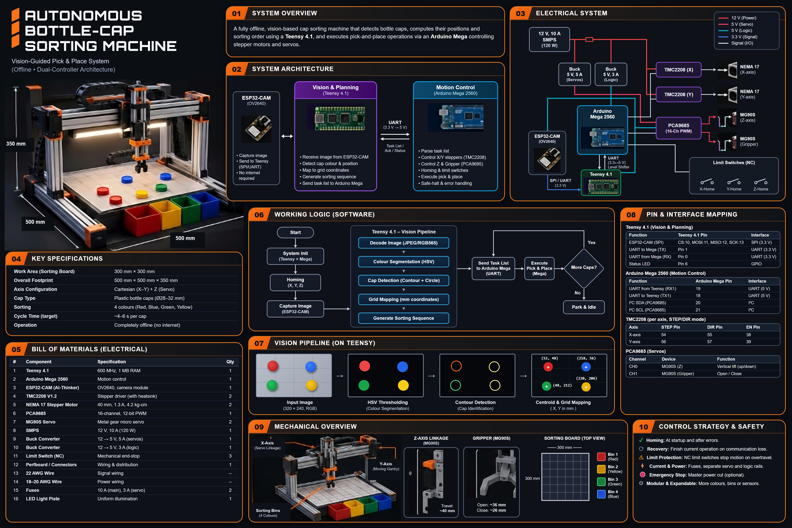
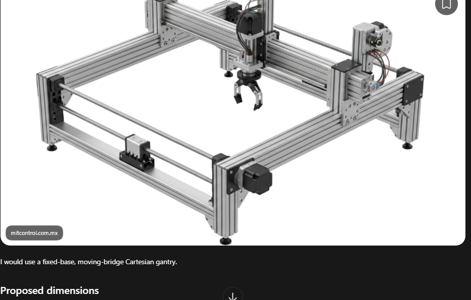
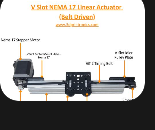
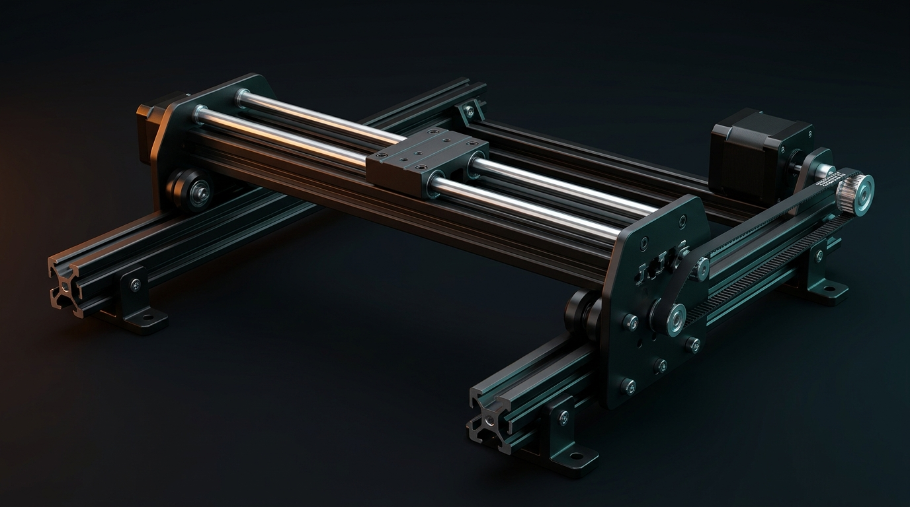
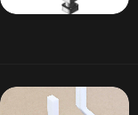
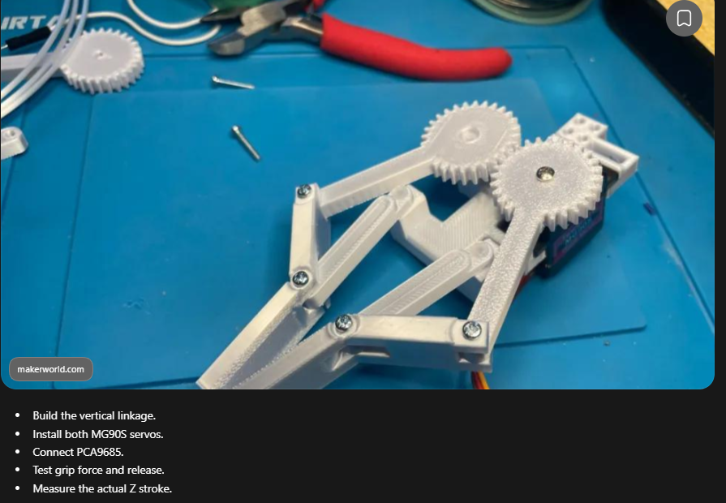
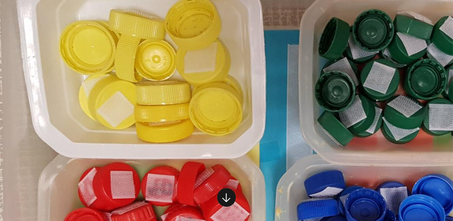
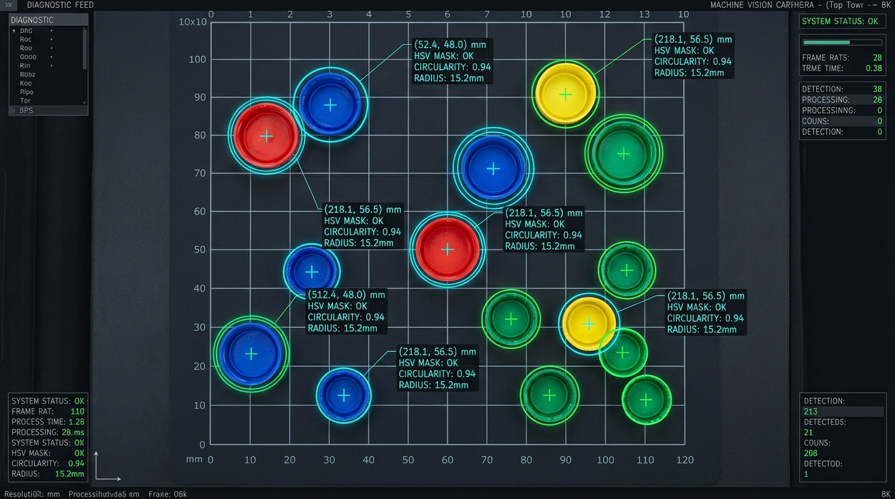
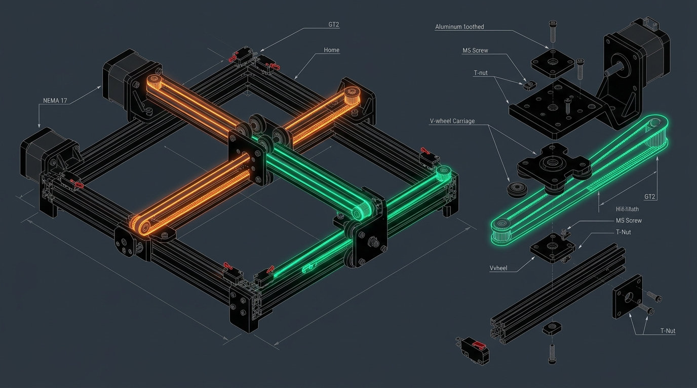
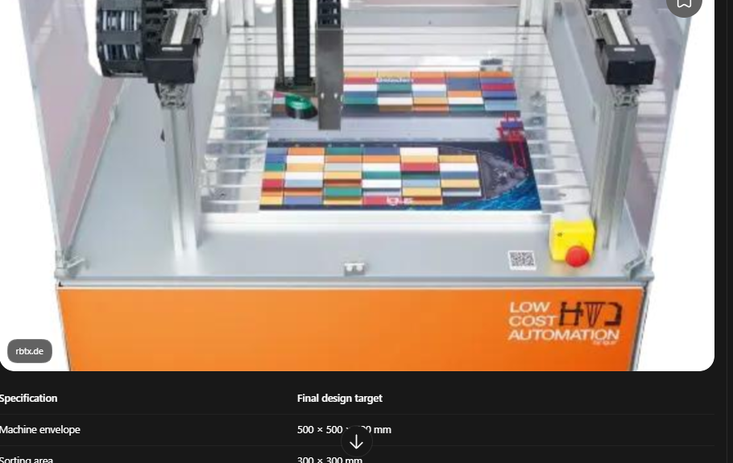

A vision-guided Cartesian pick-and-place robot featuring a dual-controller architecture: Teensy 4.1 edge computer vision, Arduino Mega 2560 real-time motion control, and ESP32-CAM acquisition. Operates 100% offline with fail-safe recovery.

The machine solves the classic automated bin-picking challenge with low-cost components, guaranteed offline uptime, and localized recovery.
Compact self-contained tabletop footprint constructed with 2020 aluminum extrusions and rigid 3D printed brackets.
Engineered to handle common plastic beverage bottle caps with outer diameter between Ø28 mm and Ø32 mm.
10 × 10 sorting grid (30 mm pitch) with matte neutral background and corner calibration markers.
Embedded computer vision detects RGB/HSV color masks, calculates centroids, and maps pixels to millimeters.
Two NEMA 17 stepper motors on GT2 belts move the gantry; two MG90S metal-gear servos control vertical stroke and jaws.
Four color-coded bins (Red, Yellow, Green, Blue) positioned outside the active grid area for unobstructed sorting.
Requires no laptop, Wi-Fi, internet connection, or external PC. All image processing executes locally on Teensy 4.1.
If UART communication drops mid-pick, the Mega autonomously finishes depositing the held cap, retracts Z, and parks safely.
By segregating image processing from hard-real-time motor step generation, the system guarantees jitter-free stepper pulse timing and instant emergency-stop reaction.
| Controller / IC | Processor Specs | Primary Responsibility | Interface Bus | Operating Voltage |
|---|---|---|---|---|
| ESP32-CAM | Xtensa LX6 @ 240 MHz + OV2640 | Image acquisition of the 300×300 mm board (QVGA 320×240 RGB565 / JPEG). Captures on command. | UART2 / SPI | 3.3V Logic |
| Teensy 4.1 | ARM Cortex-M7 @ 600 MHz (1 MB RAM) | Embedded image processing, HSV colour segmentation, contour detection, planar homography, and sorting plan generation. | UART1 & Serial2 | 3.3V Logic |
| Arduino Mega 2560 | ATmega2560 @ 16 MHz | Deterministic motion control, step pulse generation, homing routines, limit switch ISR, servo sequencing, and safety watchdog. | UART1 & I2C | 5V Logic |
| PCA9685 | 16-Channel 12-Bit PWM (I2C) | Generates jitter-free 50 Hz PWM timing for the two MG90S servos (Z-axis linkage & gripper jaws). | I2C (SDA/SCL) | 5V Logic / 5V V+ |
| TMC2208 × 2 | Trinamic SilentStepStick Driver | Drives the X and Y NEMA 17 stepper motors with StealthChop2 silence, up to 1/16 microstepping. | STEP / DIR / EN | 12V VMOT / 5V VIO |
Captures QVGA 320×240 RGB565 frames of the sorting workspace
Image decoding → Colour segmentation → Cap centre detection → Planar homography → Sorting plan
Coordinates → STEP/DIR Pulses → Servo PWM → Pickup → Bin Placement → Fault Recovery
A rigid, moving-bridge Cartesian gantry with guided vertical slider and parallel dual-finger gripper.






The workspace consists of a 300 × 300 mm matte white baseplate. White surface material eliminates specular reflection and maximizes color contrast against standard bottle caps. Four collection bins (Red, Yellow, Green, Blue) sit adjacent to the board along the positive X rail, allowing the gantry to deposit items without traversing back through active board space.
Running on the Teensy 4.1's 600 MHz ARM Cortex-M7 with 1 MB RAM. Zero external cloud servers.
QVGA Resolution: 320 × 240 pixels.
Colour Depth: RGB565 (2 bytes / pixel).
Formula: 320 × 240 × 2 = 150 KiB.
Raw frame consumes only 14.6% of internal SRAM.
Remaining >800 KiB handles HSV mask buffers, connected-component labeling, and sorting queues without heap fragmentation.
Effective transfer time: ~1.67 seconds per raw frame.
Framed with custom packet header, length word, and CRC16 checksum for transmission integrity.
Explore each stage of the vision pipeline executing on the Teensy 4.1 Cortex-M7.
The ESP32-CAM captures a top-down frame under fixed LED illumination. The raw RGB565 stream is piped over high-speed UART directly into Teensy's pre-allocated DMA ring buffer. A CRC16 check validates frame integrity before parsing begins.
Strict rail isolation guarantees servo inductive spikes never reset sensitive 3.3V logic or microcontrollers.
Direct 12V supply routed to both TMC2208 VMOT power inputs, equipped with 100 µF low-ESR decoupling capacitors.
Dedicated high-current buck converter feeds PCA9685 V+ power terminal. Absorbs sudden 1.5A stall current spikes from gripper jaws.
Clean, isolated 5V logic supply powering Arduino Mega, Teensy 4.1 VIN, ESP32-CAM, and PCA9685 VCC chip power.
| Subsystem | Source Pin | Destination Pin | Signal Description | Voltage Level | Safety Notes |
|---|---|---|---|---|---|
| ESP32-CAM ⟶ Teensy | GPIO13 (TX2) | Teensy Pin 7 (RX2) | Image Data Transmission (High Speed) | 3.3V Direct | Disable SD card interface |
| ESP32-CAM ⟶ Teensy | GPIO14 (RX2) | Teensy Pin 8 (TX2) | Frame Capture Trigger Command | 3.3V Direct | Common GND required |
| Teensy ⟶ Mega | Teensy Pin 1 (TX1) | Mega Pin 19 (RX1) | Sorting Plan Instruction Packets | 3.3V ⟶ 5V Tolerant | Mega reads 3.3V HIGH reliably |
| Mega ⟶ Teensy | Mega Pin 18 (TX1) | Teensy Pin 0 (RX1) | Execution ACK & Status Updates | 5V ⟶ Level Shifter ⟶ 3.3V | MUST use Level Shifter! |
| Mega ⟶ TMC2208 (X) | Mega Pin 2 (or 54) | Driver STEP Pin | X-Axis Step Pulse Train | 5V VIO | Up to 20 kHz step rate |
| Mega ⟶ TMC2208 (X) | Mega Pin 5 (or 55) | Driver DIR Pin | X-Axis Direction Toggle | 5V VIO | CW / CCW rotation |
| Mega ⟶ TMC2208 (Y) | Mega Pin 3 (or 60) | Driver STEP Pin | Y-Axis Step Pulse Train | 5V VIO | Moving bridge actuator |
| Mega ⟶ TMC2208 (Y) | Mega Pin 6 (or 61) | Driver DIR Pin | Y-Axis Direction Toggle | 5V VIO | CW / CCW rotation |
| Mega ⟶ Both TMC2208 | Mega Pin 8 (or 38) | Driver EN Pin | Shared Driver Enable (Active LOW) | 5V Logic | LOW = Powered, HIGH = Coast |
| Mega ⟶ PCA9685 | Mega Pin 20 (SDA) | PCA9685 SDA | I2C Data Line (400 kHz Fast-Mode) | 5V Bus | 4.7kΩ pull-up to 5V |
| Mega ⟶ PCA9685 | Mega Pin 21 (SCL) | PCA9685 SCL | I2C Clock Line | 5V Bus | Hardware I2C peripheral |
| PCA9685 Channel 0 | CH0 PWM | MG90S Servo #1 | Z-Axis Vertical Stroke (Lift/Lower) | 50 Hz PWM (5V V+) | 0° (Raised) to 90° (Lowered) |
| PCA9685 Channel 1 | CH1 PWM | MG90S Servo #2 | Gripper Jaw Clamp / Release | 50 Hz PWM (5V V+) | Open (36mm) ⟶ Closed (26mm) |
| Limit Switches ⟶ Mega | NC Switch Pins | Mega Pins 22, 23, 24 | X-Home, Y-Home, Z-Home Inputs | 5V Internal Pull-Up | Normally Closed for wire-break safety |
Click the 300×300 mm grid to add/remove caps, trigger autonomous sorting, and test communication break recovery in real-time.
How the system ensures mechanical safety, homing repeatability, and graceful recovery when UART packets are severed.
| Step # | Phase Name | X / Y Gantry Motion | Z-Axis Servo | Gripper Servo | Safety Condition |
|---|---|---|---|---|---|
| 01 | Traverse to Target | Move to cap (X, Y) coordinates | Raised (0mm) | Open (36mm) | Clearance over other caps maintained |
| 02 | Lower Over Cap | Stationary at target | Lower (~40mm) | Open (36mm) | Verify slider reached bottom stop |
| 03 | Grip Cap | Stationary | Lowered | Close (~26mm) | Check servo current/torque limit |
| 04 | Vertical Lift | Stationary | Raise (0mm) | Closed (Clamping) | Spring counterbalances gripper weight |
| 05 | Travel to Bin | Rapid traverse to designated bin slot | Raised (0mm) | Closed | No Z travel while moving in XY |
| 06 | Lower into Bin | Stationary over bin opening | Lower (~25mm) | Closed | Prevents cap bounce/ejection |
| 07 | Release Cap | Stationary | Lowered | Open (36mm) | Cap drops into designated bin |
| 08 | Retract & Advance | Stationary ⟶ Advance to next cap | Raise (0mm) | Open (Ready) | Mega increments completed cap counter |
The Arduino Mega never relies on per-step instructions. It stores the full batch sorting plan locally. If communication drops while carrying a cap, it completes depositing that cap into its assigned bin, retracts Z, halts new pickups, and enters safe idle.
Three normally closed (NC) mechanical limit switches protect X, Y, and Z axes. If any wire breaks or an overtravel occurs, the circuit immediately opens, triggering an emergency stop interrupt within 10 microseconds.
A latching red mushroom E-Stop button cuts the 12V supply to the TMC2208 stepper motor drivers and 5V servo buck converter. The controllers remain powered to log error states without hazardous mechanical motion.
Leverages existing hardware you already own while detailing all necessary hardware to purchase.
| # | Component Name | Specification / Details | Qty | Function in System | Procurement Status |
|---|---|---|---|---|---|
| 01 | Teensy 4.1 | ARM Cortex-M7 @ 600 MHz, 1 MB RAM | 1 | Vision decoding, colour segmentation, coordinates | Already Owned |
| 02 | Arduino Mega 2560 | ATmega2560 @ 16 MHz, 54 I/O | 1 | Motion sequencing, homing, servo control, safety | Already Owned |
| 03 | ESP32-CAM | AI-Thinker module with OV2640 | 1 | Top-down QVGA image acquisition of sorting board | Already Owned |
| 04 | PCA9685 Board | 16-Channel 12-bit PWM generator (I2C) | 1 | Jitter-free servo signal generation | Already Owned |
| 05 | MG90S Servo | Metal-gear micro servo (1.8–2.2 kg-cm) | 2 | Z-axis vertical stroke & Gripper clamp | Already Owned |
| 06 | 12V 10A SMPS | 120W switched-mode power supply | 1 | Master DC system power source | Already Owned |
| 07 | LED Light Plate | Uniform diffused illumination panel | 1 | Eliminates shadow/glare on plastic caps | Already Owned |
| 08 | NEMA 17 Stepper Motors | 40 mm body, 1.3 A, ~4.2 kg-cm torque | 2 | X and Y Cartesian gantry travel | To Purchase |
| 09 | TMC2208 V1.2 Drivers | SilentStepStick with aluminum heatsink | 2 | Smooth, quiet stepper motor driving | To Purchase |
| 10 | GT2 Belt & 20T Pulleys | 6 mm width, 2 mm pitch, 5 mm bore pulleys | 2 sets | Precision linear belt drive transmission | To Purchase |
| 11 | 2020 Aluminum Extrusion | V-slot / T-slot profiles cut to size | 1 set | Rigid 500×500×500 mm frame structure | To Purchase |
| 12 | Linear Rails or V-Wheels | Delrin V-wheel kits or MGN12H rails | 2 axis sets | Low-friction linear guidance for X & Y | To Purchase |
| 13 | 5V 5A Buck Converter | High-efficiency step-down (12V ⟶ 5V) | 1 | Isolated high-current power for servos | To Purchase |
| 14 | 5V 3A Logic Buck | Regulated step-down for microcontrollers | 1 | Stable 5V rail for Mega, Teensy, ESP32 | To Purchase |
| 15 | Logic Level Shifter | 4-channel bidirectional (5V ⇄ 3.3V) | 1 | Protects Teensy 3.3V RX from Mega 5V TX | To Purchase |
| 16 | NC Limit Switches & E-Stop | Microswitches with roller levers + E-Stop button | 3 switches + 1 | Homing calibration & physical emergency cutoff | To Purchase |
De-risk highest uncertainty modules first before committing to full mechanical assembly.



Modular C++ source code templates for Teensy 4.1 vision, Arduino Mega motion sequencing, and packet protocol.
// =========================================================================
// Teensy 4.1 - Embedded Vision & Plan Generator
// Hardware: ARM Cortex-M7 @ 600 MHz | RAM: 1 MB
// =========================================================================
#include <Arduino.h>
#include "packet_protocol.h"
#define FRAME_WIDTH 320
#define FRAME_HEIGHT 240
#define FRAME_BYTES (FRAME_WIDTH * FRAME_HEIGHT * 2) // 153,600 bytes RGB565
uint8_t imageBuffer[FRAME_BYTES];
CapTarget detectedCaps[100];
uint8_t capCount = 0;
// Planar Homography 3x3 Calibration Matrix (Image px -> Board mm)
float H[9] = {
0.9854f, -0.0120f, -12.45f,
0.0105f, 0.9782f, -14.10f,
0.00004f, 0.00003f, 1.0000f
};
void setup() {
Serial.begin(115200); // USB Debugging
Serial1.begin(115200); // Mega Link (3.3V <-> 5V Shifter)
Serial2.begin(921600); // ESP32-CAM High-Speed Wired Link
pinMode(LED_BUILTIN, OUTPUT);
}
void loop() {
// 1. Trigger camera frame
Serial2.write(CMD_CAPTURE_FRAME);
// 2. Read full frame with CRC verification
if (receiveFrame(imageBuffer, FRAME_BYTES)) {
// 3. Process image on Teensy M7
capCount = 0;
segmentCapsHSV(imageBuffer, detectedCaps, &capCount);
// 4. Map centroids via homography matrix
for (uint8_t i = 0; i < capCount; i++) {
transformToMillimeters(&detectedCaps[i]);
}
// 5. Generate nearest-neighbor travel path
optimizeSortingPath(detectedCaps, capCount);
// 6. Transmit complete plan batch to Mega
sendPlanBatchToMega(detectedCaps, capCount);
}
delay(100);
}
void transformToMillimeters(CapTarget* cap) {
float u = cap->pixelX;
float v = cap->pixelY;
float w = H[6]*u + H[7]*v + H[8];
cap->boardX_mm = (H[0]*u + H[1]*v + H[2]) / w;
cap->boardY_mm = (H[3]*u + H[4]*v + H[5]) / w;
}Key failure modes to mitigate before assembling hardware or burning microcontrollers.
Your NEMA 17 motors are rated at 1.3A/phase. Inexpensive TMC2208 breakout boards will overheat and shut down in thermal protect at 1.3A RMS. Adjust potentiometer Vref for $I_{RMS} \approx 0.8\text{–}0.9\text{ A}$ ($V_{ref} \approx 1.1\text{–}1.2\text{ V}$) and supply forced cooling air.
Never attempt to power the two MG90S servos from the Arduino Mega 5V regulator pin. Servo stall and acceleration currents create voltage sags that crash the microcontroller. Always route through a dedicated 5V 5A buck converter directly into PCA9685 V+.
Glossy bottle caps reflect harsh point-source room lights, creating hot white specular highlights that destroy HSV color thresholds. The included LED light plate with diffusion layer provides uniform, shadow-free illumination essential for reliable edge segmentation.
The Z-axis MG90S servo lifts not only the cap, but the entire weight of the 3D-printed gripper mechanism and its clamping servo. Use a tension spring counterbalance or small counterweight so the servo only overcomes friction, preventing gear stripping.
Camera image pixels $(u, v)$, gantry carriage coordinates $(X_g, Y_g)$, and actual physical gripper tip $(X_t, Y_t)$ are three distinct reference frames. Compute toolhead offset $(dx, dy)$ and calibrate camera homography independently.
Never rely strictly on software for human and machine safety. A hardware red mushroom emergency stop switch wired directly into the 12V SMPS line immediately de-energizes all motor coils and servos without software intervention.